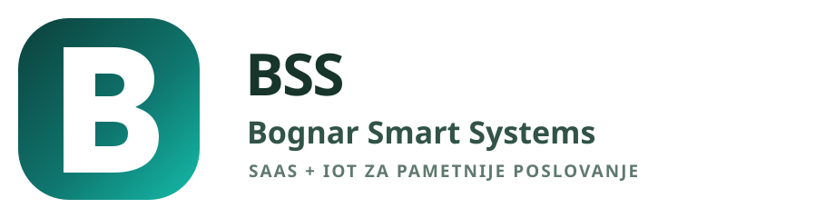
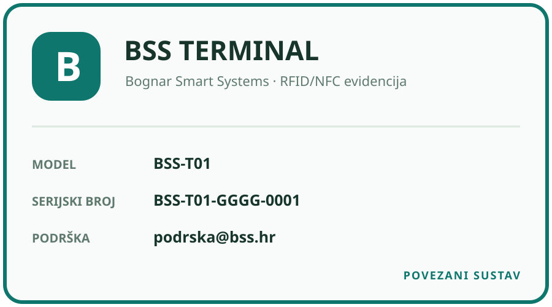
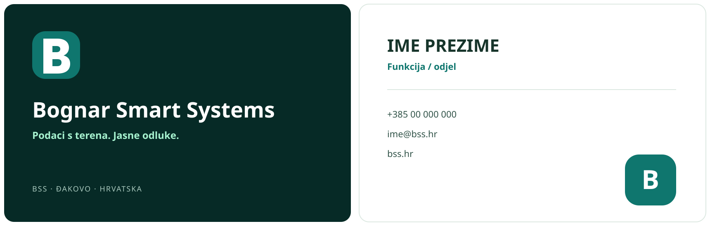
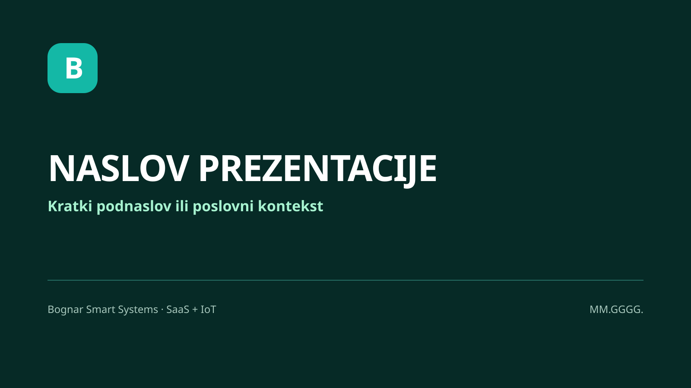

Ukloniti nesigurnost iz evidencije rada.
Vrijeme, odsutnosti, odobravanja i terminalski događaji moraju biti dostupni na jednom mjestu i razumljivi svakoj ulozi.
BSS povezuje ljude, evidenciju vremena i uređaje na terenu u jedan miran, pouzdan i razumljiv poslovni sustav.
Što BSS predstavlja i kako se pozicionira.
Vrijeme, odsutnosti, odobravanja i terminalski događaji moraju biti dostupni na jednom mjestu i razumljivi svakoj ulozi.
BSS je namijenjen malim i srednjim tvrtkama koje traže brzo uvođenje, manji ukupni trošak i kontrolu bez nepotrebne kompleksnosti.
Tehnološki napredno bez hladnog korporativnog jezika; profesionalno bez dojma skupog i nedostupnog sustava.
Prvo spominjanje: Bognar Smart Systems (BSS). Nakon toga: BSS. Brand je zajednički identitet proizvoda i ne zamjenjuje puni registrirani naziv pravne osobe na ugovorima i računima.
Postojeći B znak iz proizvoda formaliziran je kao službeni v1 identitet.

Za tamne digitalne površine, terminal i prezentacije.
Za pečat, gravuru i tisak bez boje.
Brand Book preuzima paletu iz BSS Design Systema v1.0.
Bijela, mint i mirne sive.
Hijerarhija i pouzdanost.
Radnja i ključni signal.
Dvije jasno odvojene primjene: digitalni proizvod i službeni dokumenti.
Web aplikacija, terminal, web-stranica i prezentacije. Brzo, čitljivo i tehnički neutralno.
Noto Sans za hijerarhiju i podatke; Noto Serif samo za duži urednički tekst gdje povećava čitljivost.
H1 · 48/52Jasan pregled radaH2 · 32/38Podaci koji vode odluciBody · 16/26BSS pretvara svakodnevnu evidenciju u pouzdan operativni pregled.Label · 12/16STATUS · SINKRONIZIRANOBSS govori kao pouzdan operativni partner, ne kao reklamni slogan.
“Zahtjev je spremljen i čeka odluku voditelja.”
“Terminal nije povezan. Očitanja se čuvaju lokalno.”
“Pregled za srpanj sadrži 22 zapisa.”
“Revolucionirajte HR uz nevjerojatnu AI platformu!”
“Oops! Nešto je pošlo po zlu :(”
“Kliknite ovdje za više.”
Vizual mora djelovati stvarno, korisno i nenametljivo.
Terminal u uporabi, ruke, ulaz u pogon, gradilište ili radionica. Prirodno svjetlo i dokumentarni kadar.
Kartica, očitanje, status sinkronizacije i veza uređaja s web aplikacijom.
Generičke AI motive, neon-gradijente, pretjerano pozirane stock fotografije i vizualnu buku.
Jednostavne geometrijske linije, najviše dvije brand boje, bez 3D cartoon estetike. Dijagrami ostaju tehnički točni i imaju tekstualne oznake.
Hardver mora pripadati istom sustavu kao web aplikacija.

Preuzmi SVG oznaku terminala90 × 50 mm · uređiva polja modela i serijskog brojaJedan identitet kroz prodaju, dokumentaciju, uređaj i podršku.


Vrijednost u prvoj rečenici, dokaz u podacima, jedan primarni poziv na radnju.
Poslovni problem, stvaran primjer, mjerljiv rezultat. Bez generičkih motivacijskih objava.
Minimalistički BSS Master Template, puni pravni naziv izdavatelja i jasna verzija.
Korak po korak, snimka stvarnog sučelja, upozorenje neposredno uz radnju.
Verzije i vlasništvo sprječavaju paralelne “skoro iste” varijante.
Boje, razmaci i digitalna tipografija dolaze iz BSS Design Systema v1.0. Brand Book objašnjava njihovu uporabu izvan aplikacije.
Svaka sadržajna promjena otvara novu verziju. Stara datoteka ostaje arhivirana i ne prepisuje se.
BSS_[TIP-DOKUMENTA]_vX.X_DD.MM.GGGG.pdfNovi logo, službena poruka, primarna boja ili javni predložak zahtijevaju odobrenje Product Ownera.
{kind=link}
{kind=link}
{kind=link}
{kind=link}
{kind=link}
{kind=link}
{kind=link}